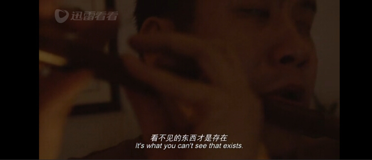

2018.2.17
《Heidi》
改编自瑞士小说家作品，很暖心的一部家庭影片，却也浓缩了欧洲社会的剪影。贵族的优越，资本家的忙碌，乡民的淳朴，却也短视。
阿尔卑斯山真的很美了。如果有机会，真想在欧洲也生活一段时间。
2018-02-18 14:52:58
2018.2.16
美国琼瑶片：女主和男主都在有对象的情况下喜欢上对方，最后他们俩居然结婚了。再然后是一个发生车祸，我一定要等你醒来，最终还好你醒来的故事。
不知道Amazon Studio为什么要给我推送这个片子
2018-02-17 06:55:20
2018.2.10
《妖猫传》陈凯歌
七月七日长生殿，夜半无人私语时。
在天愿作比翼鸟，在地愿为连理枝。
天长地久有时尽，此恨绵绵无绝期。
无上密：解读谎言就像解读自己的命运。
2018-02-11 17:26:31
2018.1.5
《Lady Bird》
导演：Greta Gerwig
美国青春电影比中国青春电影高明在哪里？
这部电影里写的是“自我斗争与和解”，是与家庭相处的矛盾，这样的角度在国产电影里很少见。
却让我不禁想起2016年暑假和我妈吵架，说起要不要去读研，要不要去工作的问题。至今仍然让我暴跳如雷心有余悸的一点是我再也不想自己的人生因为她的判断和感知而决定，她真的不了解我会因何而快乐，获得成就感。她所给我安排的“快乐”让我无比痛苦。
我虽然知道她是为我好的，但我至今没有办法按照她的意愿生活。这就是我很想远离上海的原因，去哪里都好。
对于父母家庭这件事，我只希望能探索出一种新的相处方式。希望自己能够以更成熟的方式理解她的善意，但以自己的方式而活。
2018-01-07 05:34:34

2017.12.28
《The invisible guest》
脑子不够不能玩狼人杀。所以狼人跳预言家必定会重新指定凶手。怪不得这部剧是高级版狼人杀。
2017-12-29 11:34:06
2017.12.9
最近做饭心得：
什么时候想要个男朋友？
就是心情大好做了一桌菜发现没有捧场王的时候啊！
这个片子真是激发了老夫的少女心啊！做饭这件事情真是有意思，更想开发新菜谱了！
2017-12-11 03:13:26
2017.11.11
《Moonlight》
导演：巴里·詹金斯
好喜欢这个海报的创意：三个时间段男主角的脸合成一个男主角的故事。
这部片子致敬王家卫《春光乍泄》，有那么点意思。
2017-11-12 14:37:21
2017.8.27
House of Card 第三季☑️
Frank Underwood 的形象在这里有点暴君独裁和众叛亲离了。看了人人字幕组最后的注释，每集都有历史典故呀
另外心疼我Doug兄一秒
2017-08-28 05:50:35

2017.7.11
今年第二部西藏片，影评见：
https://www.douban.com/doubanapp/dispatch?uri=/review/8659304/&dt_dapp=1
让我想起了西西弗的神话。以前看了三遍没看懂，今天有些了解了。
2017-07-11 16:33:50
2017.7.1
《饮食男女》
看了影评才发现有种情结是“埃勒客特拉”恋父情结。
李安的片子很动人，饮食男女，食色性也。对中国人“性”的表达隐晦却又到位。
2017-07-01 21:19:40
2017.6.28
《硅谷》第一季 8集 HBO出品 轻喜剧8.6分推荐
看看硅谷的创业故事还蛮有共鸣的。但偏喜剧多一些，story telling 差一些。
If have to be an asshole, hard though, try to.
2017-06-29 01:15:11
2017.6.18
《情人》
所爱隔山海，山海不可平。
杜拉斯的小说被改编成电影，也很精彩。
推荐一部相似的法国电影：《花容月貌》
讲欲望与爱情的。
2017-06-18 18:47:21
2017.6.6
《中国梵高》
纪录片 余天绮导演作品
深圳大芬村
一个中国画工的艺术家之梦。原来我们很多看到的文化纪念品并不是机械复制时代的艺术品，他们也是由画工们一笔一笔画出来的。
没见到梵高时，一切都是想象。
见到梵高后，梵高死了，神死了，自我重生了。
2017-06-07 01:22:36
2017.3.7
The Killers
宁信世有鬼，不信女人嘴。女人靠得住，打劫能致富。
（二战后，电影对女性的塑造，从一个极端走向里另一个极端）
第19届奥斯卡金像奖最佳剪辑奖提名，改编自海明威小说，典型的美国黑色电影 Film Noir
2017-03-07 11:47:28
2017.2.27
“这个杀手不太冷”。
《The Magnificent Seven 1960》
导演：约翰·斯蒂芬奇
第33届奥斯卡金像奖 最佳配乐提名
长篇影评见豆瓣链接：
https://www.douban.com/doubanapp/dispatch?uri=/review/8387336/&dt_ref=02B380E3F459AA448E530105625086E9A77C7CC8181139C3AA8BFAF8609618730CD91E9478E311C7&dt_dapp=1
2017-02-27 15:03:46
2017.2.19
不必说为了梦想而舍掉了爱情，错过了对方。其实只是没有勇气和决心为对方放弃所有。
要想成就自我，必须舍弃一些东西。
如此，千里的路若只能陪你风雪一程，握你的手前尘后路我都不问。
看完电影并没有那么难过，也没有想象中那么好看，倒是电影里的华尔兹和探戈很吸引我。
《Lalaland》
2017-02-20 00:30:03
2017.1.29
比证明荒诞还要荒诞的是，荒诞本身的虚无。
《我不是潘金莲》刘震云
————我是分割线————————
很少读中国作家的作品，上次看好像是《三体》。刘震云这部《我不是潘金莲》，读起来很流畅啊。据说冯小刚电影拍的不怎么样，还是不去看了。
补充阅读：
《一句顶万句》
2017-01-29 18:50:38
2017.1.26
如果我早就遇见了我的一生，我是否还会接受命运？
（想到的脑洞居然是：算命）
《降临》Arrival
导演：丹尼斯·维伦纽瓦
原著：雨果奖获得者 Ted Chiang
补充：
导演其他电影《边境杀手》
原著《你一生的故事》
2017-01-29 18:37:34
2016看的最颠覆人生三观的电影：
这才是大国之间博弈不死的第三方势力。
《Lord of War》战争之王
导演：安德鲁·尼克尔
主演：尼古拉斯·凯奇
2016-12-30 20:36:48
2016.12.9
前前前世，想不起你的名字，但记得爱你的感觉。
《你的名字》
-------我是分割线--------------------
想记录下今年看过的电影。会陆陆续续更一点。这些都是灵感。
看完《你的名字》 男女互换身体的穿越模式，想去来电影课上有同学受启发拍了类似的故事。
后来他们认出对方那一段的穿越方式很巧妙，可以在自己的这次电影中借鉴。
2016-12-10 00:44:17
2016.2.10 W6
这个世界对女权主义有很多种解读。
以前看《摩洛哥王妃》，顿悟有一种牺牲是放弃事业是为了成全王妃的身份。
《Intern》，似乎更接近21世纪女性一点。以前觉得有事业就够了，最起码事业不会骗你呀。可能年岁长了，爱更重要吧，因为怕孤独。
Anyway, balance is the point. Always.
2016-02-11 01:04:16
购买记录
2016-02-07 23:53:48
2015.11.20
以后TED也都更在这里吧。今天听的是关于infedility，很有启发。
Infedility are here to stay and they're not going away.
The dilemma of love and desire，they don't
yield just simple answers of black and white, bad and good.
One day, when my husband and me go to the same situation, I would say, would you like to start our second marriage together?
以后TED也都更在这里吧。今天听的是关于infedility，很有启发。
Infedility are here to stay and they're not going away.
The dilemma of love and desire，they don't
yield just simple answers of black and white, bad and good.
One day, when my husband and me go to the same situation, I would say, would you like to start our second marriage together?
2015-11-20 17:48:15
2015.11.19
Documentary：
Islam：the Empire of Faith（1）
默罕默德所创立的伊斯兰教中，真主是唯一的主，他不希望人们在死后纪念他，因为这会妨碍人们纪念真主。
默罕默德的金牌调解部落能力赋予他幸运与机遇，面对暗杀与阴谋，麦地那为他和他的信徒提供了避荫之地。
比摧毁生命更具有杀伤力的是摧毁信仰。当几经战争，伊斯兰教不断扩大。重返麦加，默罕默德展现出的至仁至慈的胸怀是没有进行屠杀，而他展露出的野心则是无情地摧毁了象征部落精神信仰与前世祖先的神像。这是精神上的统一。
后伊斯兰向伊朗，罗马帝国的扩张，得天独厚于的优势是人们当时对高压政权的反感抵触。但那时，基督教与伊斯兰教是可以求同存异的。
默罕默德离世前的伊斯兰帝国仍是可以抱以期许的。但他离世后在教派斗争中产生的极端伊斯兰分子，例如如今的ISIS，则让人不寒而栗。
以前在台湾，老师说，近代史上还没有哪一个政权执政超过100年。但，一个基于信仰而成立起来的国度早就历经了万代千秋。
2015-11-19 19:13:41

2015.11.16
re-pick up the practice
创意点：论最不可置信的证明方式的可信度
瑕疵：最后女主捉拿嫌疑犯像开挂了一样，这样真的好？
不知道中国版我是证人怎么样，但是韩国版的演技真心不错。
——《盲证》
2015-11-17 23:47:33

2015年2月1日
命运是一件令人捉摸不透的事情。
在命运面前，其实盲人和健全人一样都是迷信的。
多多少少有一点迷信。
他们相信命，因为命是看不见的。
盲人也看不见。所以盲人比健全人更了解什么是命。
对于盲人来讲，看得见的东西不一定是真的。
看不见的东西才是存在。
——《推拿》 娄烨
命运是一件令人捉摸不透的事情。
在命运面前，其实盲人和健全人一样都是迷信的。
多多少少有一点迷信。
他们相信命，因为命是看不见的。
盲人也看不见。所以盲人比健全人更了解什么是命。
对于盲人来讲，看得见的东西不一定是真的。
看不见的东西才是存在。
——《推拿》 娄烨
2015-02-01 19:00:48

民国103年12月14日
“Oh captain，my Captain”.
I went to the woods because I wanted to live deliberately
I wanted to live deep and suck out all the marrow of life,
and not when I had come to die, discover that I had not lived.
——《Dead Poets Society》
“Oh captain，my Captain”.
I went to the woods because I wanted to live deliberately
I wanted to live deep and suck out all the marrow of life,
and not when I had come to die, discover that I had not lived.
——《Dead Poets Society》
2014-12-14 17:33:28
民国103年12月1日
没有完美情侣。
（But U R just an OS.）
——《Her》Spike Jones （第八十六届奥斯卡最佳原创剧本奖）
没有完美情侣。
（But U R just an OS.）
——《Her》Spike Jones （第八十六届奥斯卡最佳原创剧本奖）
2014-12-01 23:43:35

民国103年11月20日
“小鸡长大了变成鸭，鸭长大了变羊，羊长大了变牛，牛长大了呢？”
A.牛长大了就共产主义啦
B.牛长大了馒头也长大了。馒头长大了坐火车，坐飞机。
（电影比小说温和，但依旧犀利，张艺谋不错的一部电影）
——《活着》 张艺谋
“小鸡长大了变成鸭，鸭长大了变羊，羊长大了变牛，牛长大了呢？”
A.牛长大了就共产主义啦
B.牛长大了馒头也长大了。馒头长大了坐火车，坐飞机。
（电影比小说温和，但依旧犀利，张艺谋不错的一部电影）
——《活着》 张艺谋
2014-11-21 23:24:26

民國103年10月2日
王佳芝的一句話換來的是七個人命喪黃泉。室友看完這部片子的評論是，為什麼最後是壞人存活了下來。我冷笑一聲。
也許王佳芝的存在就是為了證明那一瞬間的萬劫不復的愛情。
——電影《色戒》
王佳芝的一句話換來的是七個人命喪黃泉。室友看完這部片子的評論是，為什麼最後是壞人存活了下來。我冷笑一聲。
也許王佳芝的存在就是為了證明那一瞬間的萬劫不復的愛情。
——電影《色戒》
2014-10-02 22:25:16
民國103年10月2日
一個帶著戲謔口味的穿越劇。講的是日劇時代，蔣渭水帶領台灣民眾進行反殖民鬥爭的故事。
老師上課說，這樣一段歷史要用穿越劇的方式被呈現，也是一種現代的可悲。
【用一副畫面來回憶這部電影】
——“你們是誰”？
——“台灣人。”
——“你們在哪裡？”
——“大稻埕。”
——電影《大稻埕》
一個帶著戲謔口味的穿越劇。講的是日劇時代，蔣渭水帶領台灣民眾進行反殖民鬥爭的故事。
老師上課說，這樣一段歷史要用穿越劇的方式被呈現，也是一種現代的可悲。
【用一副畫面來回憶這部電影】
——“你們是誰”？
——“台灣人。”
——“你們在哪裡？”
——“大稻埕。”
——電影《大稻埕》
2014-10-02 22:08:27